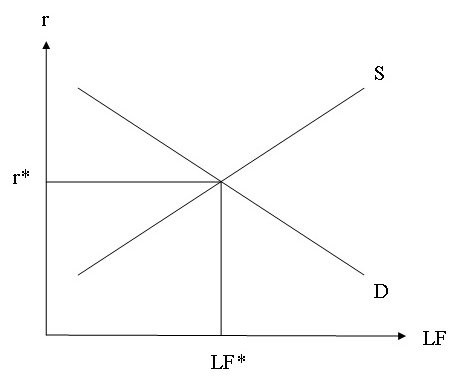
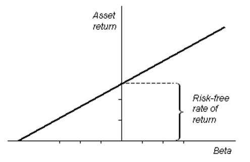
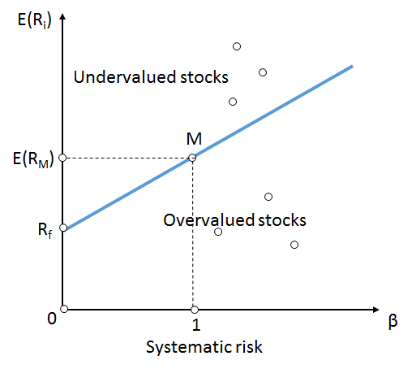

A financial intermediary is an institution that facilitates the flow of funds between individuals or other economic entities.
Review the purpose and types of financial intermediaries
A financial intermediary is an institution that facilitates the flow of funds between individuals or other economic entities having a surplus of funds (savers) to those running a deficit of funds (borrowers). Banks are a classic example of financial institutions.
Banks provide a safe and accessible environment for individuals and economic entities to deposit excess funds Additionally, banks also provide a service by packaging deposits into loans that are made available to economic agents (individuals and entities) in need of funds.
Banks convert deposits to loans and thereby increase access to capital by serving as a financial intermediary between savers and borrowers.
Though, perhaps the most well-known of financial intermediaries, banks represent only one intermediary within a larger group. Other financial intermediaries include: credit unions, private equity, venture capital funds, leasing companies, insurance and pension funds, and micro-credit providers.
As noted, financial intermediaries provide access to capital. However, in conjunction with increasing access to funds, through their ability to aggregate funds, intermediaries also reduce the transaction and search costs between lenders and borrowers.
By repurposing funds from savers to borrowers financial intermediaries are able to promote economic growth by providing access to capital. Through diversification of loan risk, financial intermediaries are able to mitigate risk through pooling of a variety of risk profiles and through creating loans of varying lengths from investor monies or demand deposits, these intermediaries are able to convert short-term liabilities to assets of varying maturities.
Returning to the example of a bank used above, banks convert short-term liabilities (demand deposits) into long-term assets by providing loans; thereby transforming maturities. Additionally, through diversified lending practices, banks are able to lend monies to high-risk entities and by pooling with low-risk loans are able to gain in yield while implementing risk management.
Savings are income after-consumption and investment is what is facilitated by saving.
Explain the connection between savers and investors
A popular national income accounting framework for discussing the economy is the GDP expenditure equation:
Y = C + I + G + (X - M), where C refers to consumption spending, I references investment spending, G is government spending, and X - M is net imports (X, exports; M, imports). Savings is defined as income that is not consumed. C, is consumption. Investment, I, is made into capital (plant and machinery, also 'human capital' - training and education), with intent to increase productivity, efficiency and output of goods and services. I can be generally defined as purchases of good that will be used to produce more goods and services in the future. In national accounting terms, stocks, bonds, mutual funds, and other cash equivalents, are not classified as investments but rather are classified as savings. Savings from this perspective facilitates capital purchase which are included in investments
Saving is what households (participants in the consumption account) do. The level of saving in the economy depends on a number of factors:
The factors as stated affect the marginal propensity to save (MPS), the percentage of after-tax income that an economic agent will choose to save. The greater the MPS, the more saving households will do as a proportion of each additional increment of income. Stocks and bonds are considered to be important intermediary forms of savings as these get transformed into a capital investment that produces value .
Savings are used to fund investments, where investments are defined as expenditures on factory plants, equipment and homes.
Assuming a closed economy, one where there is no export or impart activity to interfere with the domestic savings level, on an aggregate basis individual savings creates the supply of loanable funds available for investment purposes. The amount of savings available in the economy is equal to the amount of funding available for investment activity. The higher the level of savings, typically the lower the relative interest rate, ceteris paribus. On a macroeconomic theory basis, a higher the savings rate promotes business activity my lessening the cost of money and increasing risk taking activities to facilitate growth or production of goods and services.
Financial intermediaries can assist with increasing the incentive to save through developing financial products that offer ease of liquidation but provide a higher return than a savings account. In this manner, financial intermediaries are a significant component to the transformation of savings into investment. Mutual funds, pension obligations, insurance annuities, and other forms of savings marketed by financial intermediaries all consist of stocks, bonds, and cash balances, which in turn pay for the investment capital that increases productivity, efficiency and output of goods and services.
The loanable funds market is a conceptual market where savers (suppliers) and borrowers (demanders) are able to establish a market clearing.
Summarize the mechanics of the loanable funds market.
In economics, the loanable funds market is a conceptual market where savers (suppliers) and borrowers (demanders) are able to establish a market clearing quantity and price (interest rate). In the loanable funds market, market clearing is defined as the interest rate/loanable funds quantity where savings equal investment (the amount of capital needed for property, plant, and equipment based investments) . Loanable funds are typically cash, but can also include other financial assets to serve as an intermediary.
When the supply and demand for loanable funds are equal, savings is equal to investment and the loanable funds market is in equilibrium at the prevailing interest rate.
For instance, buying bonds will transfer savers' money to the institution issuing the bond, which can be a firm or government. In return, the borrower's (institution issuing the bond) demand for loanable funds is satisfied when the institution receives cash in exchange for the bond.
Loanable funds are often used to invest in new capital goods. Therefore, the demand and supply of capital is usually discussed in terms of the demand and supply of loanable funds.
The interest rate is the cost of borrowing or demanding loanable funds and is the amount of money paid for the use of a dollar for a year. The interest rate can also describe the rate of return from supplying or lending loanable funds.
As an example, consider this: a firm that borrows \$10,000 in funds for one year, at an annual interest rate of 10%, will have to pay the lender \$11,000 at the end of the year. This amount includes the original \$10,000 borrowed plus \$1,000 in interest; in mathematical terms, this can be written as \$10,000 × 1.10 = \$11,000.
The time value of money is the principle that a certain amount of money today has a different buying power (value) than in the future.
Calculate the present and future value of money
The time value of money is the principle that a certain amount of money today has a different buying power (value) than the same currency amount of money in the future. The value of money at a future point of time would take account of interest earned or inflation accrued over a given period of time. This notion exists both because there is an opportunity to earn interest on the money and because inflation will drive prices up, thus changing the "value" of the money.
For example, assume that an investor has \$100 today and can invest this money at a 5% return for one year. A year from now the original investment will equal \$105, (100)*(1.05). The return of \$5 represents the time value of money over the one year interval .
Assuming a 5% interest rate, \$100 invested today will be worth \$105 in one year (\$100 multiplied by 1.05). Conversely, \$100 received one year from now is only worth \$95.24 today (\$100 divided by 1.05), assuming a 5% interest rate.
Time value of money: (1 + r)t x (the value of the initial investment) = future value; where r is the annual interest rate and t is the number of years.
Alternatively, if an investment is valued at \$125 and this value includes the 7% return generated over a one year time horizon, the original value of the investment or its present value is equal to (125)/(1.07) or 117.
Present value: (the value of the investment at a future time)/(1 + r)n; where r is the annual interest rate and n is the number of years the investment has occurred.
The time value of money is the central concept in finance theory. However, the explanation of the concept typically looks at the impact of interest and assumes, for simplicity, that inflation is neutral.
Risk is pervasive in the economy and is an essential component in the derivation of an asset's investment return.
Explain the relationship between time, money, and risk
Assets can have varying maturity dates and potential for default, the attribution of time to maturity and timely payments involve an assessment of risk. Risk is pervasive in the economy and is an essential component in the derivation of an asset's investment return.
Time is a component of risk for varying reasons; however, the two most common are related to the increase in general uncertainty rising with the time horizon and reinvestment risk.
In our everyday lives, we are faced with momentary uncertainties that become increasingly harder to predict as we move from a five minute horizon to a five day, five month, or even five year period. This same phenomenon is true of financial assets. Though the attribution of acceptable inflation can be incorporated into an investment return, the actual pricing and resulting purchasing power of the investment at maturity is unknown and the uncertainty increases with time. Therefore, investment returns compensate holders for the time to maturity via a risk premium .
In finance and economics, as depicted in the graph above of the capital asset pricing model, risk is evaluated to set the boundary for acceptable return.
Risk premium compensates holders for risks inherent to an investment and are incorporated in the rate of return quoted for an investment. For example, if asset A and asset B both pay a 5% coupon on an annual basis, but asset B matures in 5 years and asset A matures in 1 year, all else equal (asset quality and issuer solvency), we would expect asset A to trade at a higher price than asset B. Remembering that yield and price are inversely related, the higher price on A implies that it has a lower yield than B. The differential in yield can be attributed to a risk premium for time to maturity.
Another aspect of time horizon is reinvestment risk. For some investments, there is a potential for an issuer to call or redeem a security prior to maturity. Given that at the time that the investment is called prevailing rates may be lower than at the purchase of the asset, the holder is taking a reinvestment risk at the time of purchase. To compensate investors for taking on this type of risk, the issuer will provide a risk premium to incentivize the investor to purchase the investment.
The compensation adjustment for holding an asset of a given risk profile can be further enhanced through asset diversification.
Explain the rationale for diversification
Each asset class has specific investment objectives; these are typically stated in a prospectus or investment description. However, all investments have some degree of risk in meeting the stated investment objectives or return.
The risks that are inherent to a specific investment can be compensated for by a market-assessed risk premium, whereby market participants adjust the price of an asset, impacting its overall return, based on the risk characteristics of the asset. However, the compensation adjustment for holding an asset of a given risk profile can be further enhanced through asset diversification.
Diversification strategies can be as simple as not "placing all your eggs in one basket. " It can also be as complex as a routine evaluation of investment correlation and risk, and dynamic rebalancing of investment holdings. However, whether a common sense or a highly quantitative approach is taken, the benefit of diversification is to limit risk and enhance consistency of return.
By holding varying investments, even if they are within the same company or sector, an investor still has the benefit of reducing risk inherent from the default of one asset. For example, stock and bonds provide different returns; while a stock may exhibit no growth for a period of time, the bond may continue to pay its coupon and provide a return. Through diversification, an investor's entire portfolio can perform better than its worst-performing asset.
In general, most asset managers would advocate holdings that are diversified across sectors and asset classes to further the benefit of growth and reduce the risk of performance volatility that may be attributable to a company, sector, or asset class . In some cases where the return on investment needs to be met, managers may advocate for the use of hedging instruments to transfer risk of return objectives being met to another party in lieu of a consistent return.
Hedging strategies can be relatively complex but, in general, they serve the role of insuring that an investor is able to meet investment performance objectives. Typically, an investor pays a fee and enters into the hedging strategy, which transfer the risk inherent in an investment for a constant return. The party on the opposite side of the hedge absorbs both the upside and downside return potential of the asset, along with the fee for taking on the risk of uncertainty, and pays the first party a constant return as part of the agreement.
It's important to note that diversification does not remove all of the risk from the portfolio. Diversification can reduce the risk of any single asset, but there will still be systematic risk (or undiversifiable risk). Systematic risk arises from market structure or dynamics which produce shocks or uncertainty faced by all agents in the market. For example, government policy, international economic forces, or acts of nature can shock the entire market. Systematic risk will affect the portfolio, regardless of how diversified it is.
The security market line is useful to determine if an asset being considered for a portfolio offers a reasonable expected return for risk.
Explain how the security market line relates risk and return
Investment assets are typically characterized as having two performance risks: systematic (or market risk) and non-systematic risk. Systematic risk arises from market structure or dynamics, which produce shocks or uncertainty faced by all agents in the market. Non-systematic risk is unique to a specific company and can be reduced through diversification.
In finance, the capital asset pricing model (CAPM) is used to determine the required rate of return of an asset, taking into account an asset's sensitivity to non-diversifiable or systematic risk. Non-diversifiable risk is noted by the variable beta (β), where beta is greater than one if the asset's price sensitivity is greater than the market; equal to one when the asset's sensitivity is equal to the market; and less than one if the asset exhibits less pricing volatility than the market.
The CAPM is a model for pricing an individual security or portfolio. The expected return of an asset is equal to the risk free rate plus the excess return of the market above the risk-free rate, adjusted for the asset's overall sensitivity to market fluctuations or its beta. Mathematically, the capital asset pricing model can be written as: E(R_i) = R_f + β(E(R_m) - R_f), where R is the return, E(R) is the expected return, i denotes any asset, f is the risk-free asset, and m is the market.
For individual securities, the security market line (SML) and its relation to expected return and systematic risk (beta) depicts an individual security in relation to their security risk class . The SML essentially graphs the results from the capital asset pricing model formula. The x-axis represents the risk (beta), and the y-axis represents the expected return. The market risk premium is determined from the slope of the SML. The relationship between β and required return is plotted on the SML, which shows expected return as a function of β. The intercept is the nominal risk-free rate available for the market, while the slope is the market premium, E(R_m)− R_f.
The security market line depicts the the return on a security relative to its own risk.
The SML is a useful tool in determining if an asset being considered for a portfolio offers a reasonable expected return for risk. Individual securities are plotted on the SML graph. If the security's expected return versus risk is plotted above the SML, it is undervalued since the investor can expect a greater return for the inherent risk. A security plotted below the SML is overvalued since the investor would be accepting a smaller return for the amount of risk assumed.
{kind=link}
{kind=link}
{kind=link}